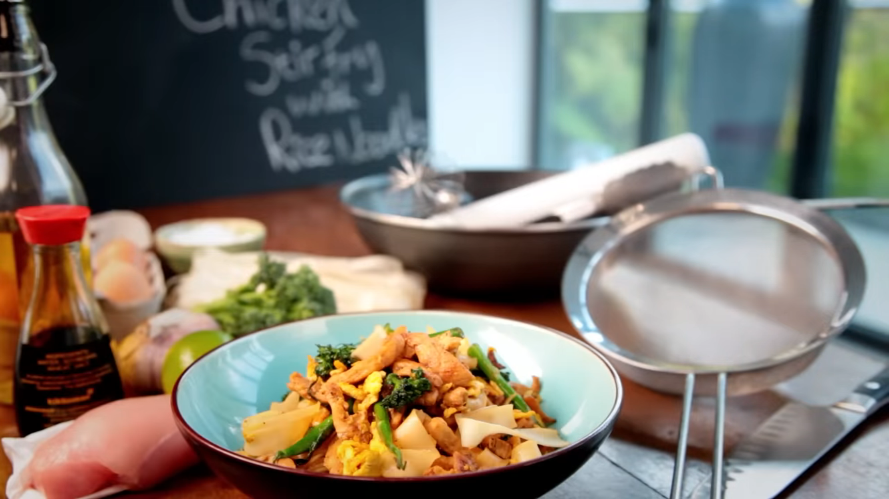

Stir Fry

Description
A quick and easy stiry fry dish from Gordon Ramsay.
Ingredients
- Rice Noodles
- Chicken Breast
- Garlic
- Broccoli
- Olive Oil
- Soy Sauce
- Egg
- Lime
Steps
- Soak rice noodles in hot water for 12-15 minutes.
- Heat wok.
- Cut chicken breast into thin strips.
- Finely slice the garlic.
- Slice broccoli into bite size pieces.
- Add olive oil to the wok.
- Add chicken and season with salt and pepper.
- Continuously stir chicken. When it begins to sear, add garlic.
- Add broccoli.
- Add soy sauce.
- Remove contents from the wok, add another teaspoon of olive oil.
- Drain the noodles.
- Whisk eggs in a bowl, then continue to whisk in the pan.
- Add noodles and cooked chicken, broccoli, garlic.
- Squeeze fresh lime over the dish.